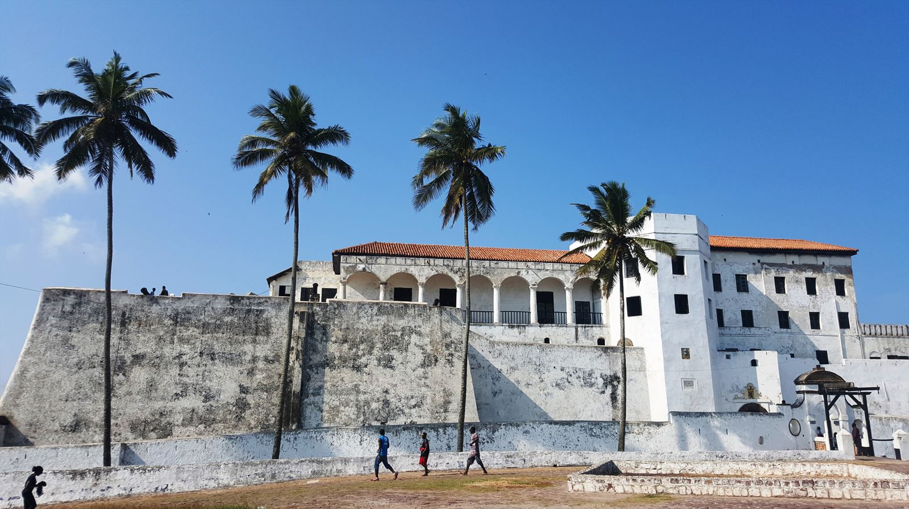
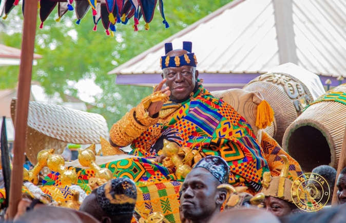

Independence
Explore Ghana's journey to independence through speeches, photographs, documents, and historic events.
Learn more →Discover Ghana's rich history and cultural heritage through carefully curated thematic collections. Explore historical photographs, documents, newspapers, books, and audiovisual resources from trusted archives, libraries, museums, and heritage institutions.

Explore Ghana's history through themed collections of photographs, publications, documents, and other historical resources.
Explore Ghana's journey to independence through speeches, photographs, documents, and historic events.
Learn more →
Discover records, maps, and stories from the colonial era and their impact on Ghana's history.
Explore Collection →
Discover Ghana's traditional kingdoms, historic rulers, and cultural heritage through curated resources on traditions, festivals, customs, and institutions.
Learn more →